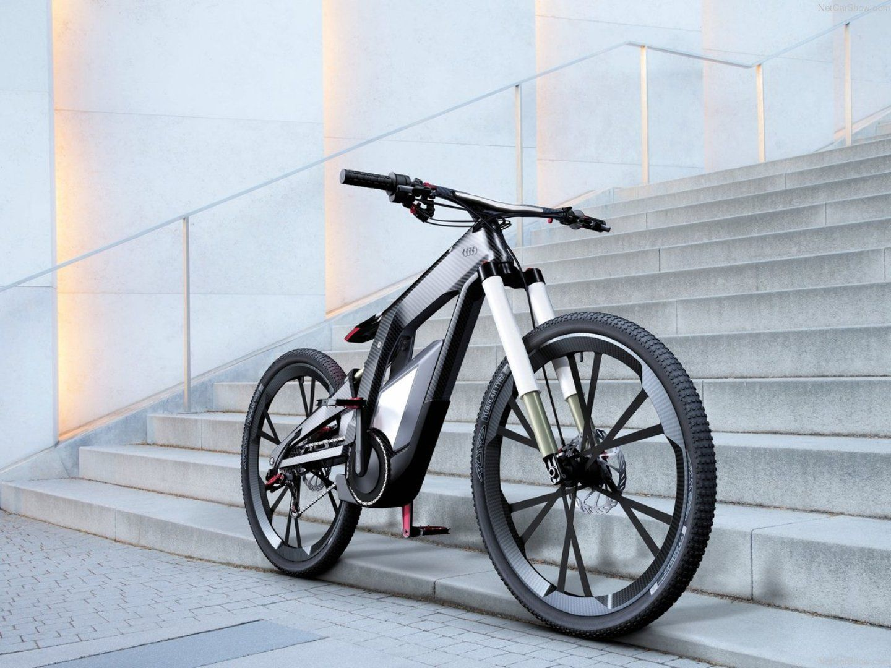
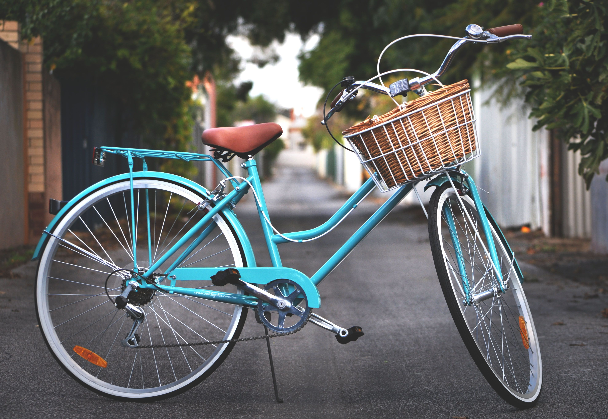
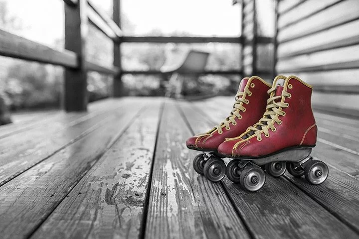
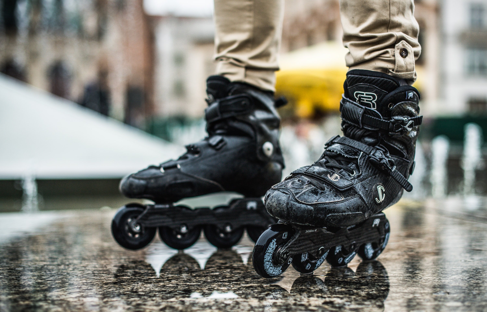
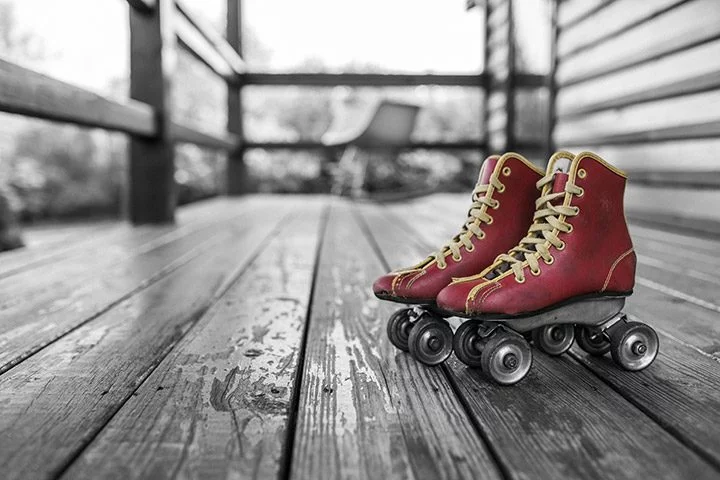
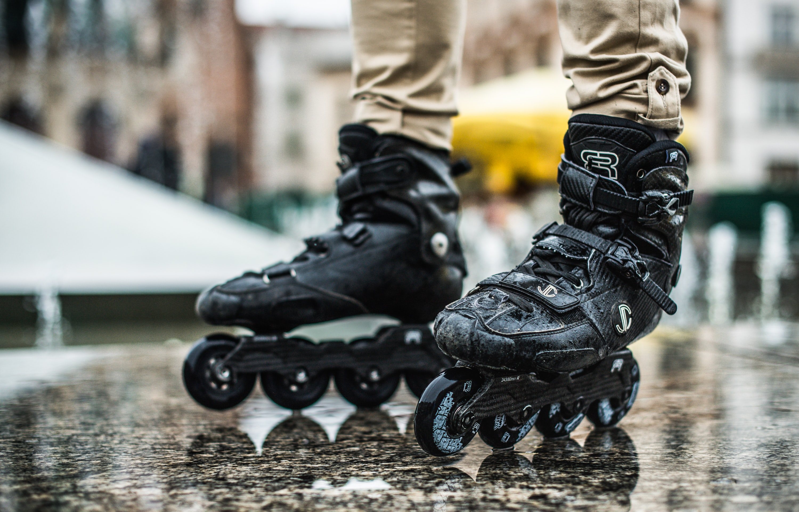

Alege-ți o bicicletă potrivită
(pentru cei care îşi caută prima bicicletă nouă) În primul rând, va trebui să găseşti bicicleta potrivită pentru scopul urmărit: cum vrei să te dai şi pe unde. În zilele noastre, diversele categorii de biciclete sunt clasificate pe criterii diferite, cum ar fi funcționalitatea (navetă, competiţii, agrement etc.), construcția cadrului (vertical, pliabil, etc.), angrenarea (cu o singură viteză sau cu mai multe viteze) sau propulsia (alimentată de om sau asistată de motor electric).
Simplitatea e soluția de început
Ei bine, toate acestea ar putea suna suficient de complicat pentru un proaspăt biciclist, așa că pentru a fi mai simplu, va trebui doar să te gândeşti dacă vei urca pe bicicleta ta pentru a face naveta la școala, la muncă sau în jurul orașului cu prietenii. Dacă da, atunci poți fi interesat/ă în modele ‘lifestyle’ sau ‘citybike’; dacă eşti încă student, pentru drumul către facultate, terasă sau job-ul ‘part-time’ este recomandat să te gândeşti la o bicicletă simplă, single-speed, asortată şi uşoară!
 Fie ca iti place sa te plimbi cu bicicleta în parc, vrei sa mergi cu viteza sau adori sporturile extreme pe rampe improvizate
sau special amenajate in skatepark, ai nevoie de mijloace de aventură corespunzătoare personalității tale, pentru că va fi multă adrenalină la mijloc și automat
este nevoie și de protecția corespunzătoare și evitarea oricărei probleme de incompatibilitate.
Dar dacă vreau să merg pe role?
A venit primavara si odata cu ea vremea frumoasa numai buna pentru iesit in parc. Daca te numeri printre persoanele active atunci cu siguranta nu vei iesi afara pentru o
simpla plimbare, ci vei dori sa iei cu tine o pereche de role. Însă, dacă nu deții o pereche și ești începător, bineînțeles, trebuie să alegi cea mai bună posibilitate
pentru tine. Dacă te uiți prin magazine poate o să ți se pară că toate rolele arată la fel, mai puțin mărimea ghetei, însă în relitate sunt mai multe aspecte care trebuie
luate în considerare atunci când alegi perechea pe care o vei cumpăra în final.

Ce aș putea să achiziționez pentru început?
Trebuie în primul rând să ai în vedere faptul că există două tipuri de role. Aranjamentul roților pe gheata de care sunt prinse acestea, determină
un criteriu de deosebire dintre cele două tipuri, totodată și tehnici complet diferite de abordare a stabilității, mișcării dar și frânării acestora.
Există gheată cu roțile așezate în formă de pătrat, în număr de patru, unde stabilitatea este maximă dar mișcările sunt efectuate mai cu dificultate,
sau gheată cu roțile așezate liniar, în număr de două, trei, patru sau cinci, în funcție de
scopul activității desfășurate, unde stabilitatea este precară, este mult mai pretențioasă, dar manevrabilitatea și mobilitatea pe acestea sunt fantastice!

Dar dacă vreau să merg pe role?
A venit primavara si odata cu ea vremea frumoasa numai buna pentru iesit in parc. Daca te numeri printre persoanele active atunci cu siguranta nu vei iesi afara pentru o simpla plimbare, ci vei dori sa iei cu tine o pereche de role. Însă, dacă nu deții o pereche și ești începător, bineînțeles, trebuie să alegi cea mai bună posibilitate pentru tine. Dacă te uiți prin magazine poate o să ți se pară că toate rolele arată la fel, mai puțin mărimea ghetei, însă în relitate sunt mai multe aspecte care trebuie luate în considerare atunci când alegi perechea pe care o vei cumpăra în final.

Ce aș putea să achiziționez pentru început?
Trebuie în primul rând să ai în vedere faptul că există două tipuri de role. Aranjamentul roților pe gheata de care sunt prinse acestea, determină un criteriu de deosebire dintre cele două tipuri, totodată și tehnici complet diferite de abordare a stabilității, mișcării dar și frânării acestora. Există gheată cu roțile așezate în formă de pătrat, în număr de patru, unde stabilitatea este maximă dar mișcările sunt efectuate mai cu dificultate, sau gheată cu roțile așezate liniar, în număr de două, trei, patru sau cinci, în funcție de scopul activității desfășurate, unde stabilitatea este precară, este mult mai pretențioasă, dar manevrabilitatea și mobilitatea pe acestea sunt fantastice!
